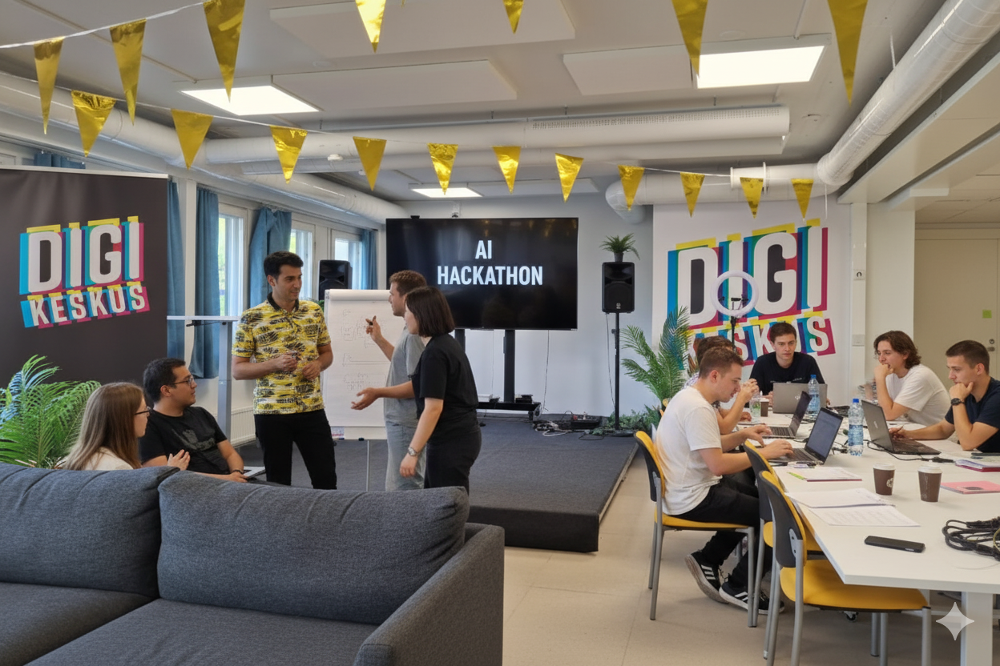

10.2026
Entrepreneurship · A new chapter
In October 2026, I started my entrepreneurial journey, opening a new chapter in my life.
02 / EXPERIENCE
My experience spans software development, project delivery, an unpaid ecosystem partnerships role, and volunteer mentoring through International House Jyväskylä.
In October 2026, I started my entrepreneurial journey, opening a new chapter in my life.
Contributing in an unpaid capacity to develop connections between startups, researchers, universities, investors and mentors in the Finnish deep-tech ecosystem.
Project planning and coordination, regional innovation, hackathons, business outreach, mentoring and digital product initiatives in Viitasaari.
Graduated on 4 June 2026 from the Master’s Degree Programme in Information Technology, Full Stack Software Development (60 ECTS). Thesis: Designing and Developing TrioTalk: An AI-Powered Language Exchange Application for the Finnish Market.
Mentored international professionals through the MILEstone project at International House Jyväskylä, supporting career development, networking and professional integration.
Experience in computer and mobile repair, websites, ecommerce, networking, customer relations and sales.

Professional profile
Choose the English or Finnish version of my updated professional résumé. Both include my latest contact details, completed JAMK degree, Spinout experience and MILEstone mentoring.
SPEAKING & MENTORING
Through the MILEstone project at International House Jyväskylä, I volunteered as a mentor, supporting international professionals with career direction and networking. I also share lessons from my path into technology and entrepreneurship.
Invite me to speak to your students, community or event audience about my journey and the lessons I have learned along the way.
Send me a request with your event details, audience, preferred date and budget. I will get back to you to discuss a suitable talk.
Speaking fees are negotiable based on your budget and the scope of the event.
Send a speaking request ↗SOLUTIONS FOR YOUR BUSINESS
Need a website, a digital tool or a smarter way to work? Hire me to develop a solution for your business, or explore my services at Tech Jyvä.